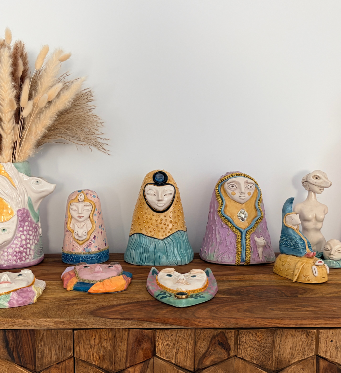

We live surrounded by voices telling us what we lack. The market sells us answers. The noise convinces us that what we need is always outside, always ahead, always in someone else.
And so, little by little, we stop listening to ourselves.
Chundra is born from the conviction that this inner voice doesn't disappear — it only goes quiet. That inside each of us lives a wisdom older than urgency, deeper than anxiety. A steady place from which to inhabit the world without getting lost in it.
My pieces are figures that know that place. They are not perfect, not distant — they are strange the way all true things are strange. They are made so that something in you recognises them.
Not to decorate. To remember.
Because when you find your own centre, it's not only you who benefits. Something of that spills outward — toward others, toward the common space we all share. To be well is, in some way, to do good.
Find the wise one within you.